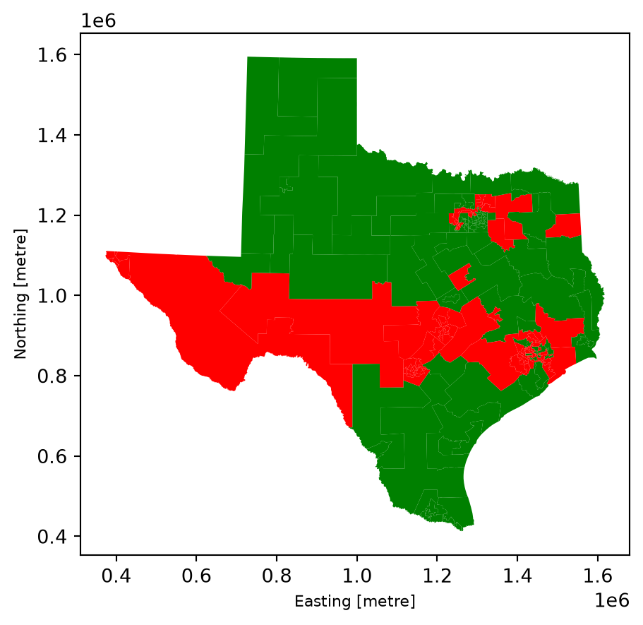
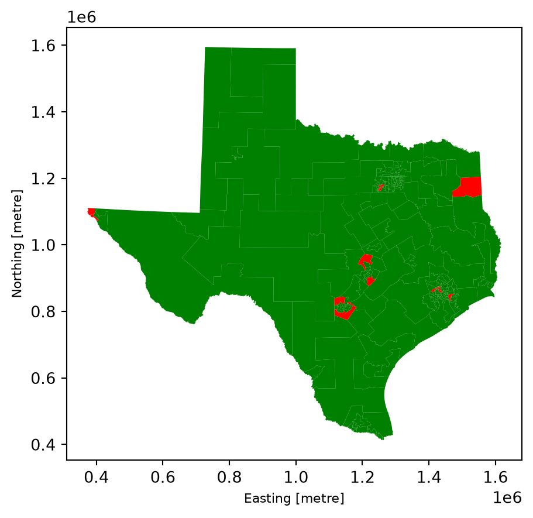
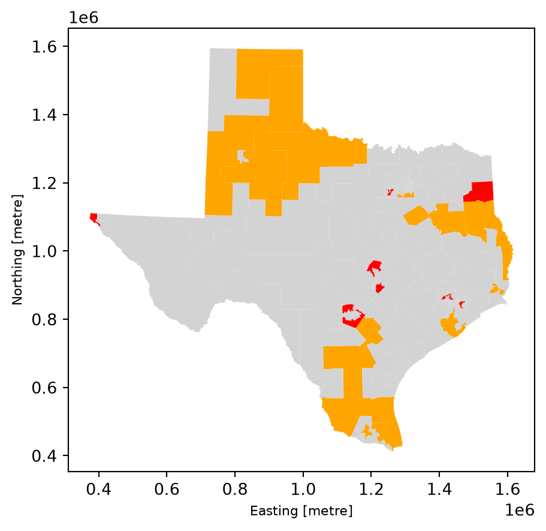
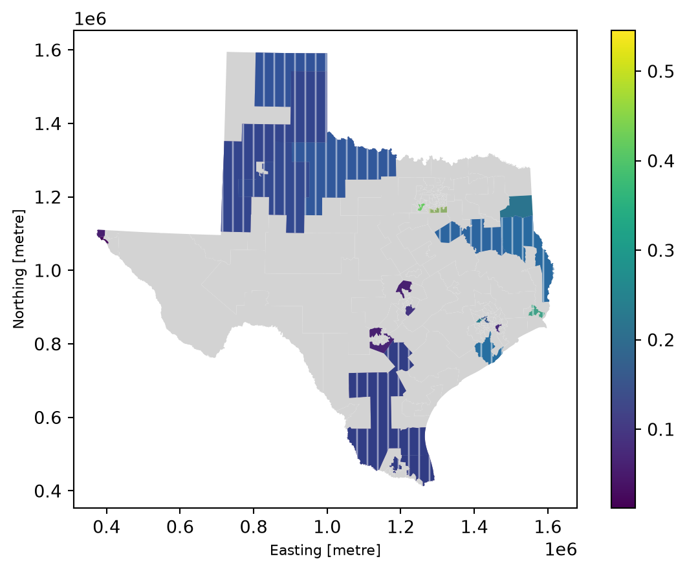
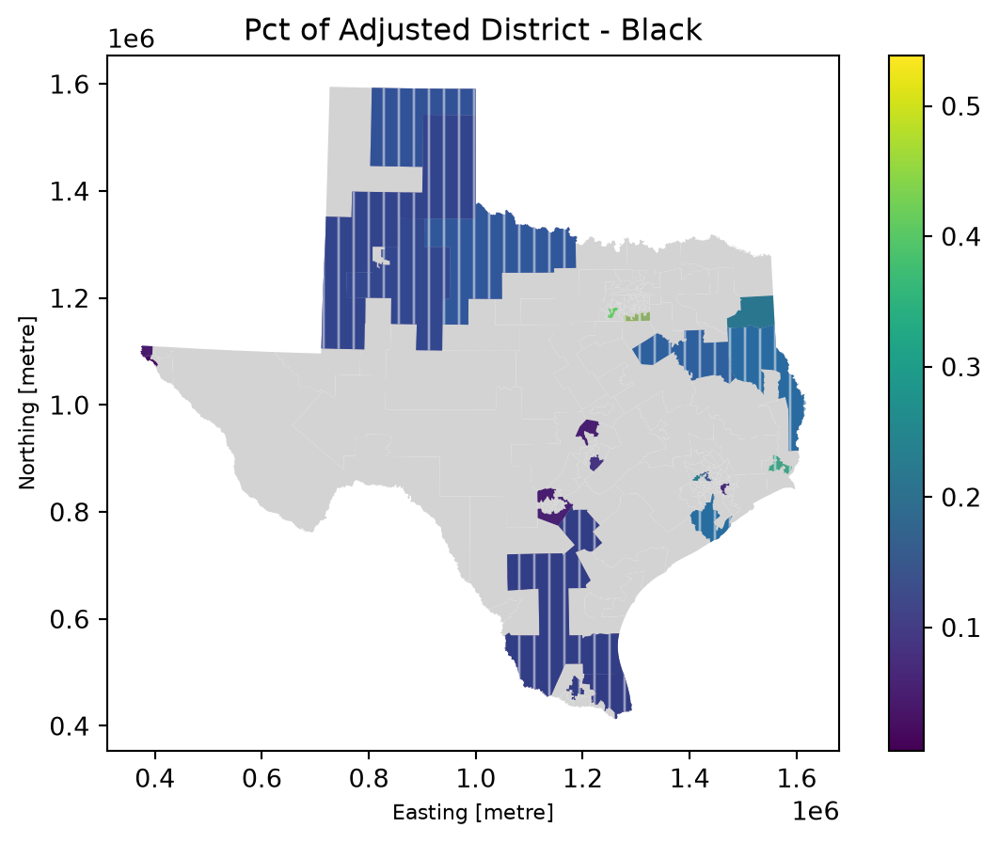
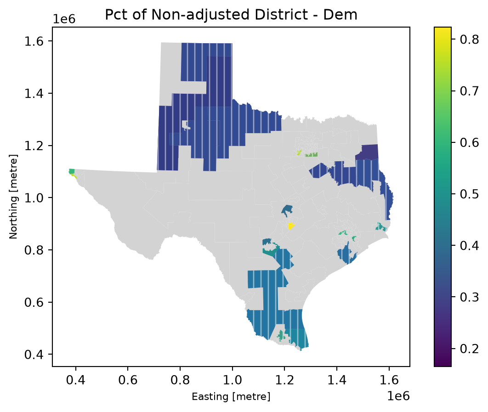
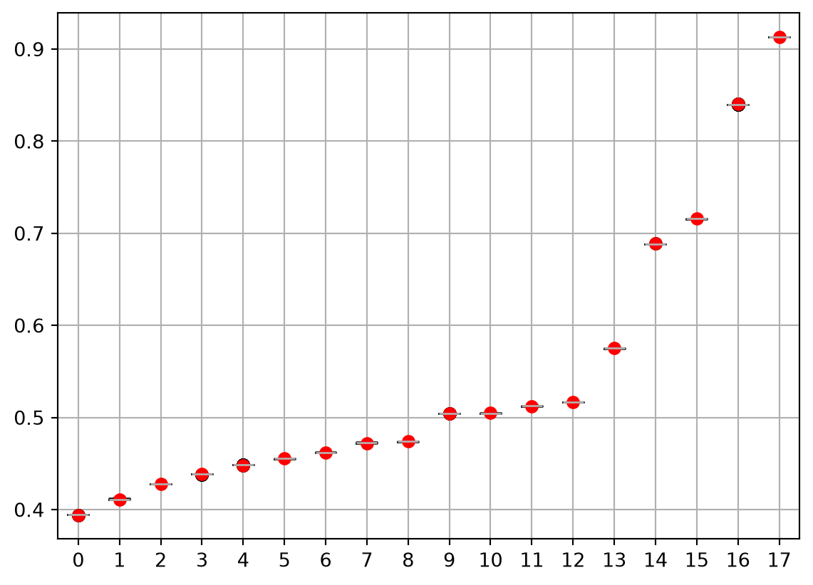

import pandas as pd
import numpy as np
import matplotlib.pyplot as pltInitial Questions
Stage 2.1: Initial Explorations of the Dataset.
Note
This example captures my own real, work-in-progress thinking about this dataset. I haven’t gone back and made any revisions. I am writing this page at the same time as I’m asking these questions. What is in this dataset? What kinds of questions might I want to ask as I drill down?
About
Dataset
The dataset is Executions in the United States, 1608 - 2002: The Espy File. It is stored in the _data folder, and the entire set of downloaded files from ICPSR is in the folder ICPSR-08451. Below, you’ll see that I’m using inscrutable column names. They are labled in the file projects/demo/_data/ICPSR_08451/DS0001/08451-0001-Codebook.pdf
Research Question
My initial research question is pretty vague – “Are there trends in the crimes for which people have been executed in the United States?” And if I’m being honest, this isn’t the right question for someone with both my disciplinary background and my technical skillset/interests. I’m more interested in how this dataset is shaped, and what I might learn from the kinds of values I’m seeing in it. (This is a more inductive approach.)
from pyprojroot import here # this helps us navigate tricky path stuff between local runs and quarto builds
# Load the data using here() with the path from the project root
file_dist = here("projects/rae/data/Texas_district_reallocation_results.xlsx")
file_block = here("projects/rae/data/Texas_block_returning_data.csv")
df_dist = pd.read_excel(file_dist)
df_block = pd.read_csv(file_block)
df_dist.head()| district_h | total | white | black | latino | other | pctwhite | adjtotal | adjwhite | adjblack | adjlatino | adjother | changepop | changew | changeb | changel | changeo | toosmall | toobig | |
|---|---|---|---|---|---|---|---|---|---|---|---|---|---|---|---|---|---|---|---|
| 0 | 1 | 194995 | 128452 | 41405 | 15298 | 9840 | 0.658745 | 194277.0 | 128799.0 | 41163.000 | 14478.00 | 9837.000 | -718.0007 | 346.9994 | -241.9999 | -820.00000 | -3.000029 | 0.0 | 0.0 |
| 1 | 2 | 196284 | 139560 | 13652 | 33228 | 9844 | 0.711011 | 197753.0 | 140530.0 | 14027.000 | 33347.00 | 9849.000 | 1469.0000 | 970.0002 | 375.0000 | 118.99990 | 4.999865 | 0.0 | 0.0 |
| 2 | 3 | 202477 | 120870 | 8584 | 60199 | 12824 | 0.596957 | 203253.1 | 121361.4 | 8693.061 | 60370.69 | 12827.960 | 776.1370 | 491.4169 | 109.0608 | 171.69420 | 3.964969 | 0.0 | 0.0 |
| 3 | 4 | 195819 | 115380 | 27148 | 44027 | 9264 | 0.589218 | 196703.4 | 115919.8 | 27401.820 | 44115.78 | 9266.000 | 884.3703 | 539.7695 | 253.8168 | 88.78423 | 1.999943 | 0.0 | 0.0 |
| 4 | 5 | 186084 | 125669 | 16588 | 35845 | 7982 | 0.675335 | 186882.3 | 126276.8 | 16803.160 | 35824.16 | 7978.102 | 798.2596 | 607.8332 | 215.1621 | -20.83765 | -3.898047 | 0.0 | 0.0 |
#this is the same results as above but broken down by block group
df_block.head()
df_dist.columnsIndex(['district_h', 'total', 'white', 'black', 'latino', 'other', 'pctwhite',
'adjtotal', 'adjwhite', 'adjblack', 'adjlatino', 'adjother',
'changepop', 'changew', 'changeb', 'changel', 'changeo', 'toosmall',
'toobig'],
dtype='str')First question: Change in population
I notice there’s a column in the districts dataset that examines the change in total population, and the change disaggregated by racial group. What’s the average change in the House Districts’ total populations?
# import pandas as pd
# from pyprojroot import here # this helps us navigate tricky path stuff between local runs and quarto builds
# # Load the data using here() with the path from the project root
# file_path = here("projects/demo/_data/ICPSR_08451/DS0001/08451-0001-Data.tsv")
#on average districts change by 1,211 people BUT this tells me nothing about whether we've lost or gained
df_dist['changepop'].abs().aggregate('mean')
#did more districts lose or gain population? GAIN
np.sign(df_dist['changepop']).sum()np.float64(89.0)I know that on average districts changed by 1211, and 89 more House Districts gained total population than lost it.
Second question: Change in population by demographic
# Let's assign that subset to it's own data frame so that we can work just with it
it_list = ['changew','changeb', 'changel', 'changeo']
for item in it_list:
print(f"======={item}=======")
print("Mean", df_dist[item].mean())
print("Mean Abs", df_dist[item].abs().mean())
print("Gain or Lose?", np.sign(df_dist[item].sum()))=======changew=======
Mean 3.200000010110671e-06
Mean Abs 384.79816626666667
Gain or Lose? 1.0
=======changeb=======
Mean 0.006653119999997822
Mean Abs 433.88822992
Gain or Lose? 1.0
=======changel=======
Mean 0.006634460000010828
Mean Abs 426.60481500666674
Gain or Lose? 1.0
=======changeo=======
Mean 7.726666666864427e-06
Mean Abs 7.73007488
Gain or Lose? 1.0=======changew======= Mean 3.200000010110671e-06 Mean Abs 384.79816626666667 Gain or Lose? 1.0 =======changeb======= Mean 0.006653119999997822 Mean Abs 433.88822992 Gain or Lose? 1.0 =======changel======= Mean 0.006634460000010828 Mean Abs 426.60481500666674 Gain or Lose? 1.0 =======changeo======= Mean 7.726666666864427e-06 Mean Abs 7.73007488 Gain or Lose? 1.0
Okay it seems like across all four racial demographics just barely more districts gained population than lost it. The mean changes in the white, black, latino, and “other” population are 384.80, 433.89, 426.60, 7.773, respectively.
Third question: Now I’m curious how much each districts total population is under or over the actual population baseline for a single congressional district in TX
ideal = 194303
df_dist['dif_from_ideal'] = df_dist['adjtotal'] - ideal
df_dist.sort_values('dif_from_ideal', ascending = False)
#if negative then ideal is greater than the adjusted, aka its too small compared to ideal once adjusted
#if greater then ideal is greater than the adjusted, aka its too large compared to ideal once adjusted | district_h | total | white | black | latino | other | pctwhite | adjtotal | adjwhite | adjblack | adjlatino | adjother | changepop | changew | changeb | changel | changeo | toosmall | toobig | dif_from_ideal | |
|---|---|---|---|---|---|---|---|---|---|---|---|---|---|---|---|---|---|---|---|---|
| 150 | Total N | 29145505 | 11584597 | 3727721 | 11441717 | 2391470 | NaN | 29145507.0 | 1.158460e+07 | 3.727722e+06 | 11441717.95 | 2391470.016 | NaN | NaN | NaN | NaN | NaN | NaN | NaN | 28951204.0 |
| 94 | 95 | 203993 | 38168 | 83226 | 72684 | 9915 | 0.187104 | 205273.5 | 3.830745e+04 | 8.410066e+04 | 72946.45 | 9918.901 | 1280.4620 | 139.44730 | 874.6624 | 262.4506 | 3.901247 | 0.0 | 1.0 | 10970.5 |
| 121 | 122 | 203881 | 99012 | 9889 | 76258 | 18722 | 0.485636 | 204651.6 | 9.926726e+04 | 9.991753e+03 | 76664.40 | 18728.200 | 770.6061 | 255.26310 | 102.7526 | 406.3950 | 6.195920 | 0.0 | 1.0 | 10348.6 |
| 6 | 7 | 202803 | 116958 | 43098 | 34268 | 8479 | 0.576707 | 204635.0 | 1.178020e+05 | 4.395000e+04 | 34402.00 | 8481.000 | 1832.0000 | 844.00000 | 852.0003 | 133.9997 | 2.000018 | 0.0 | 1.0 | 10332.0 |
| 143 | 144 | 203960 | 27741 | 13775 | 154151 | 8293 | 0.136012 | 204626.1 | 2.780907e+04 | 1.392802e+04 | 154592.80 | 8296.249 | 666.1279 | 68.07454 | 153.0226 | 441.7816 | 3.249485 | 0.0 | 1.0 | 10323.1 |
| ... | ... | ... | ... | ... | ... | ... | ... | ... | ... | ... | ... | ... | ... | ... | ... | ... | ... | ... | ... | ... |
| 87 | 88 | 186059 | 86426 | 6355 | 88538 | 4740 | 0.464509 | 182985.0 | 8.563000e+04 | 5.357000e+03 | 87285.00 | 4713.000 | -3074.0000 | -796.00030 | -998.0000 | -1253.0000 | -27.000000 | 1.0 | 0.0 | -11318.0 |
| 30 | 31 | 184966 | 45168 | 2844 | 133026 | 3928 | 0.244196 | 182527.0 | 4.444600e+04 | 1.903000e+03 | 132267.00 | 3911.000 | -2439.0000 | -722.00020 | -941.0000 | -759.0003 | -17.000000 | 1.0 | 0.0 | -11776.0 |
| 21 | 22 | 186322 | 51597 | 76614 | 48640 | 9471 | 0.276924 | 182249.0 | 4.977468e+04 | 7.570279e+04 | 47311.48 | 9460.038 | -4073.0130 | -1822.31600 | -911.2122 | -1328.5230 | -10.962320 | 1.0 | 0.0 | -12054.0 |
| 7 | 8 | 192599 | 115289 | 27665 | 42337 | 7308 | 0.598596 | 179796.6 | 1.113362e+05 | 2.252418e+04 | 38696.22 | 7240.000 | -12802.3700 | -3952.76900 | -5140.8170 | -3640.7840 | -68.000090 | 1.0 | 0.0 | -14506.4 |
| 24 | 25 | 186855 | 80425 | 33865 | 55714 | 16851 | 0.430414 | 179478.7 | 7.815529e+04 | 3.108980e+04 | 53423.05 | 16810.530 | -7376.3360 | -2269.71100 | -2775.1960 | -2290.9550 | -40.473540 | 1.0 | 0.0 | -14824.3 |
151 rows × 20 columns
House District 95, once adjusted has 10,970.5 more individuals than the ideal district, meaning that many people have been removed from the district’s population via the prison pipeline. On the other hand, district 24 has 14,824.3 fewer people than the ideal, meaning that in actuality, its population is inflated by inmates. All other districts have differences from ideal that are between 10,970 and 14,824.
Fourth question: Geographic patterns?
Since gerrymandering is inherently geographic, I’m curious whether there are geographic patterns to the districts that gain vs. lose population after adjustment. This should be the same thing as finding whether the adjusted districts are too big (i.e., population was gained) or too small (i.e., population was lost).
First I need to get the Texas house district shape files to plot.1
#importing the 2022 HD shapes (this should be pre- recent mid-decade redistricting)
import geopandas as gpd
file_dist_shape = here('projects/rae/data/TX-2022-State-House-district-shapes-no-landmarks.geojson')
district_shape = gpd.read_file(file_dist_shape)#switching the coordinate system for plotting
district_shape.crs
district_shape = district_shape.to_crs('EPSG:3081')
district_shape.crs<Projected CRS: EPSG:3081>
Name: NAD83 / Texas State Mapping System
Axis Info [cartesian]:
- X[east]: Easting (metre)
- Y[north]: Northing (metre)
Area of Use:
- name: United States (USA) - Texas.
- bounds: (-106.66, 25.83, -93.5, 36.5)
Coordinate Operation:
- name: Texas State Mapping System (meter)
- method: Lambert Conic Conformal (2SP)
Datum: North American Datum 1983
- Ellipsoid: GRS 1980
- Prime Meridian: GreenwichWhy do i get two different results for the plots below? Probably because toobig and toosmall variables are based on the legal definition of being too big or small.
df_dist_wshape = pd.concat([district_shape[['geometry']],df_dist], axis = 1)
df_dist_wshape['color'] = df_dist_wshape['dif_from_ideal'].apply(lambda x: 'red' if x > 0.0 else 'green' )
df_dist_wshape.plot(color = df_dist_wshape['color'])
color_map = {-1.0: 'blue', 1.0: 'red', 0.0: 'green'}
color = df_dist_wshape['toobig'].map(color_map)
df_dist_wshape.plot(color = color)
df_dist_wshape['toobig'].value_counts()toobig
0.0 139
1.0 11
Name: count, dtype: int64Okay, so I assume that some districts can be too big, too small, or niether, but because toobig and toosmall are binary indicators, I need to make a column that accounts for all three options.
df_dist_wshape['size'] = np.where(df_dist_wshape['toobig'] == 1.0, 'big',
np.where(df_dist_wshape['toosmall'] == 1.0, 'small', 'neither'))df_dist_wshape.head()
color_map = {'neither': 'lightgrey', 'big': 'red', 'small': 'orange'}
color = df_dist_wshape['size'].map(color_map)
df_dist_wshape.plot(color = color)
Great, it seems like all of the districts that are too big once people are reallocated are districts near/encompassing cities, while the ones that shrink are in more rural. This makes sense given what we know.
Fifth question: Racial Demographics
Now lets look at the demographic breakdowns of these counties; specifically the percent of the population that is black.
file_tx_dist = here('projects/rae/data/district-data.csv')
tx_dist_info = pd.read_csv(file_tx_dist)rel_districts = list(df_dist_wshape[df_dist_wshape['size'] != 'neither']['district_h'])
#texas demo info is by district so should map perfectly!
# tx_dist_info['Label'].value_counts()
# df_dist_wshape['district_h'].value_counts()
tx_dist_info = tx_dist_info.drop(0, axis = 0 ).reset_index()df_150 = pd.concat([tx_dist_info, df_dist_wshape], axis = 1)
df_150.head()| index | ID | Label | T_20_CENS_Total | T_20_CENS_White | T_20_CENS_Hispanic | T_20_CENS_Black | T_20_CENS_Asian | T_20_CENS_Native | T_20_CENS_Pacific | ... | changepop | changew | changeb | changel | changeo | toosmall | toobig | dif_from_ideal | color | size | |
|---|---|---|---|---|---|---|---|---|---|---|---|---|---|---|---|---|---|---|---|---|---|
| 0 | 1.0 | 1.0 | 1 | 194995.0 | 128452.0 | 15298.0 | 42039.0 | 2545.0 | 7213.0 | 364.0 | ... | -718.0007 | 346.9994 | -241.9999 | -820.00000 | -3.000029 | 0.0 | 0.0 | -26.0 | green | neither |
| 1 | 2.0 | 2.0 | 2 | 196284.0 | 139560.0 | 33228.0 | 14239.0 | 2453.0 | 7245.0 | 431.0 | ... | 1469.0000 | 970.0002 | 375.0000 | 118.99990 | 4.999865 | 0.0 | 0.0 | 3450.0 | red | neither |
| 2 | 3.0 | 3.0 | 3 | 202477.0 | 120870.0 | 60199.0 | 9464.0 | 7014.0 | 6889.0 | 467.0 | ... | 776.1370 | 491.4169 | 109.0608 | 171.69420 | 3.964969 | 0.0 | 0.0 | 8950.1 | red | neither |
| 3 | 4.0 | 4.0 | 4 | 195819.0 | 115380.0 | 44027.0 | 28261.0 | 3565.0 | 6517.0 | 353.0 | ... | 884.3703 | 539.7695 | 253.8168 | 88.78423 | 1.999943 | 0.0 | 0.0 | 2400.4 | red | neither |
| 4 | 5.0 | 5.0 | 5 | 186084.0 | 125669.0 | 35845.0 | 17228.0 | 1768.0 | 6217.0 | 241.0 | ... | 798.2596 | 607.8332 | 215.1621 | -20.83765 | -3.898047 | 0.0 | 0.0 | -7420.7 | green | neither |
5 rows × 43 columns
#lets check that the T_20 CENS total is the same as/close to as the pre-reallocation totals
print(df_150.columns)
df_150[['T_20_CENS_Total', 'total']]
df_150['CENS_total_diff'] = df_150['T_20_CENS_Total']- df_150['total']Index(['index', 'ID', 'Label', 'T_20_CENS_Total', 'T_20_CENS_White',
'T_20_CENS_Hispanic', 'T_20_CENS_Black', 'T_20_CENS_Asian',
'T_20_CENS_Native', 'T_20_CENS_Pacific', 'V_20_VAP_Total',
'V_20_VAP_White', 'V_20_VAP_Hispanic', 'V_20_VAP_Black',
'V_20_VAP_Asian', 'V_20_VAP_Native', 'V_20_VAP_Pacific',
'E_16-20_COMP_Total', 'E_16-20_COMP_Dem', 'E_16-20_COMP_Rep',
'geometry', 'district_h', 'total', 'white', 'black', 'latino', 'other',
'pctwhite', 'adjtotal', 'adjwhite', 'adjblack', 'adjlatino', 'adjother',
'changepop', 'changew', 'changeb', 'changel', 'changeo', 'toosmall',
'toobig', 'dif_from_ideal', 'color', 'size'],
dtype='str')df_150['CENS_total_diff_pct'] = df_150['CENS_total_diff']/df_150['total']
df_150['CENS_total_diff_pct'].sort_values()0 0.0
1 0.0
2 0.0
3 0.0
4 0.0
...
146 0.0
147 0.0
148 0.0
149 0.0
150 NaN
Name: CENS_total_diff_pct, Length: 151, dtype: float64There is no difference between the 2020 Census totals and the totals in the adjusted data!
print(tx_dist_info.index)
print(df_dist_wshape.index)
df_150.head()
fig, ax = plt.subplots()
df_150 = df_150.set_geometry('geometry')
df_150 = df_150.to_crs('EPSG:3081')
df_150['pct_black'] = df_150['T_20_CENS_Black'] / df_150['T_20_CENS_Total']
df_150.plot(ax = ax, color = 'lightgrey')
df_150[df_150['district_h'].isin(rel_districts)].plot(ax = ax, column = 'pct_black', legend = True)
df_150[df_150['toosmall'] == 1.0].plot(ax = ax, column = 'size', alpha = 0.5, hatch = '||', hatchcolor = 'white')
plt.title('Pct of Non-adjusted District - Black')RangeIndex(start=0, stop=150, step=1)
RangeIndex(start=0, stop=151, step=1)Seems like there’s not an immediate racial correlation here. Some of the districts that gain people after reallocation have a high percent of black individuals, others do not.
Sixth question: Prison locations
Lets plot the 5 largest state correctional facilities . I think I know which districts in which they might fall…
# #five largest state run prisons in texas, 3 seem to be in the same place
# adresses = pd.Series(['2661 FM 2054, Tennessee Colony, TX 75884', '2101 FM 369, Iowa Park, TX 76367', '9601 Spur 591, Amarillo, TX 79107', '1391 FM 3328, Tennessee Colony, TX 75880', '2664 FM 2054, Tennessee Colony, TX 75886'])
# prisons_gdf = gpd.tools.geocode(adresses)
# #, verify = False) this doesn't work :(
# prisons_gdf.head()
# file_prisons = here('projects/rae/data/allprisons.csv')
# prison_gdf = gpd.read_file(file_prisons)
# prison_gdf = prison_gdf[prison_gdf['stateshortname'] == 'TX']
# prisons_1 = prison_gdf[['name', 'coordinates']]
# prisons_2 = prison_gdf[['PrisonName', 'geometry']]
# prisons_1.rename(columns = {'name': 'PrisonName', 'coordinates': 'geometry'}, inplace = True)
# prisons_merged = pd.concat([prisons_1, prisons_2], axis = 0).reset_index()
# prisons_merged = prisons_merged[prisons_merged['geometry'].str.contains(')', regex = False)]
# prisons_merged['geometry'] = shapely.from_wkt(prisons_merged['geometry'])
# prisons_merged = prisons_merged.set_geometry('geometry', crs = 4326)
# prisons_merged = prisons_merged.to_crs('EPSG:3081')import shapely
df_150 = df_150.set_geometry('geometry', crs = 3081)
fig, axis = plt.subplots()
df_150.plot(ax = axis, color = 'lightgrey')
df_150[df_150['district_h'].isin(rel_districts)].plot(ax = axis, column = 'pct_black', legend = True)
df_150[df_150['toosmall'] == 1.0].plot(ax = axis, column = 'size', alpha = 0.5, hatch = '||', hatchcolor = 'white')
# prisons_merged.plot(ax = axis, color = 'red', markersize = 3)
Hmm, it seems like prisons also exist in areas that become “too big” after reallocation. However, that may be due to the existance of lower security or municipal prisons in the area.
Not sure how to get rid of the outlier point!
#shapely.from_wkt(prisons_merged['geometry'].iloc[0])Seventh question: The plots above used the pct_black with the unadjusted totals/Census counts. Do the results change when we ue the adjusted data?
fig, ax2 = plt.subplots()
df_150['adj_pct_black'] = df_150['adjblack'] / df_150['adjtotal']
df_150.plot(ax = ax2, color = 'lightgrey')
df_150[df_150['district_h'].isin(rel_districts)].plot(ax = ax2, column = 'adj_pct_black', legend = True)
df_150[df_150['toosmall'] == 1.0].plot(ax = ax2, column = 'size', alpha = 0.5, hatch = '||', hatchcolor = 'white')
ax2.set_title('Pct of Adjusted District - Black')
It doesn’t look like anything changed.
Eighth question: What about partisanship? Are there partisan patterns to the way in which people are distributed?
file_elect = here('projects/rae/data/district-election-data.csv')
df_elect = pd.read_csv(file_elect)[['E_16-20_COMP_Total', 'E_16-20_COMP_Dem', 'E_16-20_COMP_Rep']]
df_elect = df_elect.drop(0, axis = 0).reset_index()df_elect.head()
df_elect_shape = pd.concat([df_elect, df_dist_wshape], axis = 1)
df_elect_shape.head()
fig, ax3 = plt.subplots()
df_150['Dem_vote_share'] = df_150['E_16-20_COMP_Dem'] / df_150['E_16-20_COMP_Total']
df_150.plot(ax = ax3, color = 'lightgrey')
df_150[df_150['district_h'].isin(rel_districts)].plot(ax = ax3, column = 'Dem_vote_share', legend = True)
df_150[df_150['toosmall'] == 1.0].plot(ax = ax3, column = 'size', alpha = 0.5, hatch = '||', hatchcolor = 'white')
ax3.set_title('Pct of Non-adjusted District - Dem')
#plt.title('Pct of Non-adjusted District - Dem', ax = ax3)
There are much clearer partisan pattersn to this. Most of the counties that are “too big” after reallocation voted Democratic, so this confirms that theres are partisan consquences to prison gerrymandering in Texas, as the literature suggests.
9th question: What’s the distribution of legal maps after reallocation?
Below I’m attempting to run the Flip Chain MCMC method using Gerrychain. This seems to work so next, let me try to do this with Texas 2020 VTD data.
from gerrychain import (
GeographicPartition,
Partition,
Graph,
MarkovChain,
updaters,
constraints,
accept,
Election,
)
from gerrychain.proposals import ReCom
from gerrychain.constraints import contiguous
from gerrychain.examples import gerrymandria
from functools import partial
import pandas
from gerrychain.accept import always_accept
from gerrychain.constraints import single_flip_contiguous
from gerrychain.proposals import propose_random_flip
from gerrychain.constraints import contiguous
pa_chain = MarkovChain(
total_steps=40,
rng=2024,
)file_graph = here("projects/rae/data/PA_VTDs.json")
graph = Graph.from_json(file_graph)
my_updaters = {"population": updaters.Tally("TOT_POP", alias="population")}
pa_chain.initial_partition = GeographicPartition(
graph, assignment="2011_PLA_1", updaters=my_updaters
)
elections_updaters = {
"SEN10": Election("SEN10", {"Democratic": "SEN10D", "Republican": "SEN10R"}),
"SEN12": Election("SEN12", {"Democratic": "USS12D", "Republican": "USS12R"}),
"SEN16": Election("SEN16", {"Democratic": "T16SEND", "Republican": "T16SENR"}),
"PRES12": Election("PRES12", {"Democratic": "PRES12D", "Republican": "PRES12R"}),
"PRES16": Election("PRES16", {"Democratic": "T16PRESD", "Republican": "T16PRESR"}),
}
pa_chain.add_updaters(elections_updaters)
ideal_population = sum(pa_chain.initial_partition["population"].values()) / len(
pa_chain.initial_partition
)
# pa_chain.proposal_fn = build_recom_proposal_fn(
# pop_col="TOT_POP",
# pop_target=ideal_population,
# epsilon=0.02,
# )
pa_chain.proposal_fn = propose_random_flip
pa_chain.add_constraint(contiguous)
pa_chain.acceptance_fn = always_acceptdef cut_edges_length(partition):
return len(partition["cut_edges"])
pa_chain.add_constraint(
constraints.UpperBound(cut_edges_length, 2 * len(pa_chain.initial_partition["cut_edges"]))
)import tqdm
data = pandas.DataFrame(
sorted(partition["SEN12"].percents("Democratic"))
for partition in pa_chain.with_progress_bar()
)
ax = data.boxplot(positions=range(len(data.columns)))
plt.plot(data.iloc[0], "ro")
plt.show()
Footnotes
Source: https://gis-txdot.opendata.arcgis.com/datasets/0627be7aa6f0440081bd750734761a63_0/about↩︎